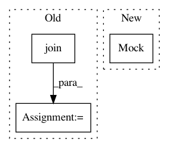

679e77b78f7ba906cd2e6aa18366fa8facd153db,test/test_evaluation/test_test_evaluator.py,TestEvaluator_Test,test_datasets,#TestEvaluator_Test#,35
Before Change
getter.__name__)
with self.subTest(testname):
D = getter()
output_directory = os.path.join(os.path.dirname(__file__),
".%s" % testname)
self.output_directories.append(output_directory)
err = np.zeros([N_TEST_RUNS])
for i in range(N_TEST_RUNS):
D_ = copy.deepcopy(D)
After Change
getter.__name__)
with self.subTest(testname):
backend_mock = unittest.mock.Mock(spec=Backend)
backend_mock.get_model_dir.return_value = "dutirapbdxvltcrpbdlcatepdeau"
D = getter()
D_ = copy.deepcopy(D)
y = D.data["Y_train"]
In pattern: SUPERPATTERN
Frequency: 3
Non-data size: 3
Instances
Project Name: automl/auto-sklearn
Commit Name: 679e77b78f7ba906cd2e6aa18366fa8facd153db
Time: 2017-02-11
Author: feurerm@informatik.uni-freiburg.de
File Name: test/test_evaluation/test_test_evaluator.py
Class Name: TestEvaluator_Test
Method Name: test_datasets
Project Name: home-assistant/home-assistant
Commit Name: 272539105f949ac28e37adac0474ac28d65256e0
Time: 2016-10-17
Author: rob.capellini@gmail.com
File Name: tests/helpers/test_config_validation.py
Class Name:
Method Name: test_isfile
Project Name: automl/auto-sklearn
Commit Name: 679e77b78f7ba906cd2e6aa18366fa8facd153db
Time: 2017-02-11
Author: feurerm@informatik.uni-freiburg.de
File Name: test/test_evaluation/test_abstract_evaluator.py
Class Name: AbstractEvaluatorTest
Method Name: test_finish_up_model_predicts_NaN